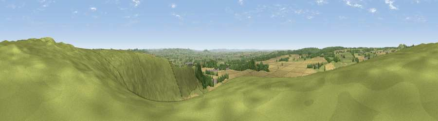

Viewpoint near Mere
#11266 in England · top 16% of its area beats it · near MereThe view, rendered

A 360° render of this exact spot computed from the terrain model, tree cover and land cover — summer colours, afternoon light, calibrated against photographs of famous viewpoints. Real trees, hedges and buildings will differ in detail.
The panorama
Grey silhouette: terrain skyline in each direction (720 bearings, Earth curvature and refraction included). Dashed green: skyline with trees (+15 m) and buildings (+8 m) as obstacles. Blue strip: how far the ground is visible on each bearing.
Where the view opens
Wedge length = distance to the farthest visible ground on that bearing (vegetation-aware). Rings at 10, 25 and 50 km.
What fills the view
63% cropland · 31% grassland · 5% woodland
Angular shares of the visible panorama (visual magnitude), not map area. Landscape diversity 0.36 (0–1 Shannon).
Key numbers
More beautiful places nearby
The staircase of upgrades: each row has a higher view potential than everything closer. Driving times are estimates from straight-line distance, calibrated against real road routing — check an actual route before setting out.
| Place | Direction | Drive | Score |
|---|---|---|---|
| White Sheet Hill | NE · 0 km | ~1 min | 64.9 |
| Viewpoint near Maiden Bradley | NNW · 3 km | ~8 min | 69.0 |
| Long Knoll | NNW · 4 km | ~8 min | 74.6 |
| Cley Hill | NNE · 11 km | ~21 min | 76.8 |
| Viewpoint near Lamyatt | W · 14 km | ~25 min | 77.8 |
| Viewpoint near Berwick St John | SE · 18 km | ~32 min | 78.2 |
| Beacon Batch | NW · 39 km | ~58 min | 79.4 |
| Viewpoint near Askerswell | SSW · 48 km | ~68 min | 81.7 |
51.10968, -2.28171 · source: screening · position refined by local search. Computed location — check access rights before visiting.